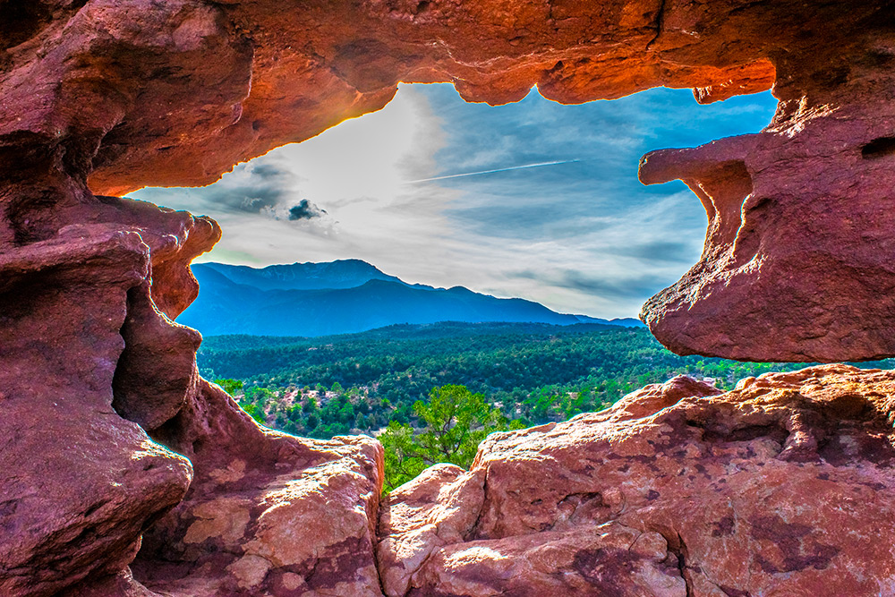

WKND Adventures
Expeditions
Three continents. Forty-three days on the trail. These are the journeys we can't stop thinking about.
Flagship Expedition
W Circuit: 9 Days, 115 km, One Life-Changing Walk
Torres del Paine is not a place you visit. It's a place that works on you — slowly, relentlessly, through wind and weather and the sheer scale of its granite towers. The W Circuit covers the park's most iconic terrain: Los Cuernos, the French Valley, the Mirador Las Torres. Over nine days and 115 kilometres, we documented every camp, every weather window, every lesson the trail had to teach.
Jordan M. and Morgan L. completed the route in late austral summer, carrying full packs and splitting the writing. This is the definitive WKND account of South America's greatest trail. Gear lists, daily breakdowns, honest assessments of what the guidebooks won't tell you.
Our Expeditions
What an Expedition Demands
WKND uses the word expedition deliberately, because it has been emptied of meaning by the travel industry. For us, an expedition requires a minimum of three consecutive days in terrain where access to outside assistance is genuinely limited — not just inconvenient. It requires camp-to-camp movement under load, meaning you carry what you sleep in and what you eat, and the weight compounds the difficulty of the terrain in ways that a day hike never does. It requires the physical capacity to sustain output across multiple days of accumulated fatigue, which is a different kind of fitness than the kind that gets you up a steep hill on a single morning.
Base weight is a proxy for competence on a long route. Every extra kilogram you carry on day one is a kilogram you'll resent on day four, when your feet are already worn and the pass is still above you. WKND contributors typically carry between 12 and 18 kilograms fully loaded on multi-day expeditions, depending on the terrain and season. That number includes shelter, sleep system, food, water treatment, first aid, navigation equipment, emergency signalling, and clothing for expected and unexpected conditions. It does not include casual camera kits that photographers insist on carrying. The 18 kg figure includes those too.
There's a meaningful difference between a guided tour and a self-supported expedition — and both have genuine value. A guided tour provides professional risk management, local knowledge, logistical infrastructure, and the freedom to focus on the experience rather than the decision-making. A self-supported expedition transfers all of those responsibilities to the party. It demands stronger navigation, better judgment about weather and terrain, the ability to make sound decisions under fatigue, and the psychological resilience to sit with uncertainty. Neither is superior; they are different activities that share the same landscape.
WKND contributors prepare for major expeditions over a minimum of 12 weeks. That preparation includes loaded hiking at target pack weight, regular overnight and multi-day shakedown trips, gear testing in realistic conditions, and active work on the specific technical skills the route demands. It also includes honest conversation with expedition partners about each person's fitness, fears, and likely responses to hardship — because the party that talks before departure deals with far fewer problems on the trail than the one that doesn't.
WKND's expedition reports document failure as thoroughly as success. Weather retreats, navigational errors, gear failures, summit turns — they're all in the account because they're where the useful information lives. The expedition that turns around 400 metres below the summit because of deteriorating conditions is not a failed expedition. It's a well-executed one, and the detailed account of why the decision was made and what the descent looked like is exactly the kind of information that helps the next party make a better-informed call. We are not interested in accounts that edit out the hard days.
What makes an expedition?
Multi-day, remote
An expedition isn't a day hike with ambition. It demands consecutive days in terrain that punishes mistakes — and rewards genuine commitment. You sleep where you stop, and you carry what you need.
Documented honestly
We don't edit out the hard days. The blisters, the navigational errors, the moment someone cried at camp — it's all in the story. The honest account is the useful one, and it's the only kind we publish.
Leave it wilder
Every route we document comes with a responsibility. Pack out more than you pack in. Learn the local leave-no-trace protocols. Read our full sustainability commitments before you plan your trip.
Full Accounts
The Gear You'll Actually Need
Navigation & Safety
A handheld GPS unit — Garmin inReach Mini 2 is the current standard in WKND kit lists — serves two roles: navigation and emergency signalling via satellite SOS. A printed topo map is not optional, because battery failure is a real event. Every expedition party should carry a PLB (personal locator beacon) as a separate backup to any two-way satellite communicator. Emergency protocols — who calls for rescue, what information to transmit, what to do while waiting — should be discussed and agreed before departure, not worked out at the moment they're needed.
Sleep Systems
For alpine conditions (overnight temperatures regularly below 0°C), your shelter needs a minimum 3-season rating and ideally a geodesic or semi-geodesic structure that handles wind load without collapsing. Sleeping bag temperature ratings should be treated as lower-comfort limits, not the temperature you'll sleep well at — add 5–7°C of margin. Sleeping mat R-value is non-negotiable: anything below R3 on glacier or snowpack terrain is inadequate regardless of your sleeping bag's rating. We use an R5+ mat for anything above 2500 metres in winter or shoulder season.
Food & Water
The calorie target for a loaded multi-day expedition is 3,500–4,500 kcal per day depending on terrain, pack weight, and individual metabolism — significantly above daily maintenance needs. Food weight should sit at approximately 800–900 g per person per day when using dehydrated meals. For water treatment, a Sawyer Squeeze filter handles most backcountry sources efficiently; in high alpine terrain above human activity, a UV SteriPen is faster and lighter. At altitude or in cold conditions, a chemical treatment backup (Aquatabs) adds negligible weight and covers the scenarios where filter performance drops.
The WKND Pre-Departure Checklist
- Permit confirmed and physical or digital copy carried
- Emergency contact filed with name, route plan, and expected return date
- Weather window checked within 48 hours of departure
- First-aid kit contents reviewed and restocked to full inventory
- GPS device loaded with correct route and waypoints; batteries fresh
- Satellite communicator tested and registered with rescue authority
- All food weighed and portioned for exact number of days plus one buffer day
- Water treatment equipment tested and backup method packed
- Shelter pitched at home to check for any broken poles, torn fabric, or faulty zips
- Leave-no-trace protocols reviewed for specific terrain type (alpine, coastal, desert)
- Team medical and dietary requirements confirmed with all party members
- Exit strategy and bailout points identified on map for each day of the route
In planning
What's next
We're currently in the planning stages for two major new expeditions. The first: a traverse of the Montana Rockies — 28 days, remote resupply, no trail for long stretches. The second: Iceland's lava fields from Reykjavik to the Westfjords, timed for late summer midnight sun.
Both are planned for 2026–2027. Subscribe to get the full dispatches as they happen.